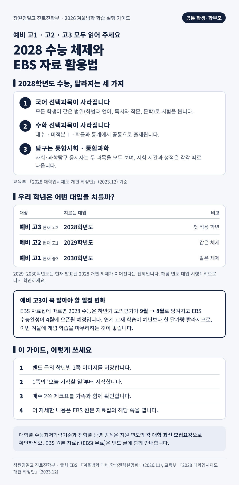
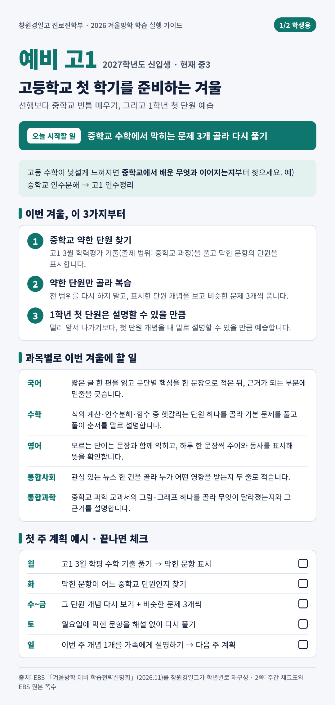
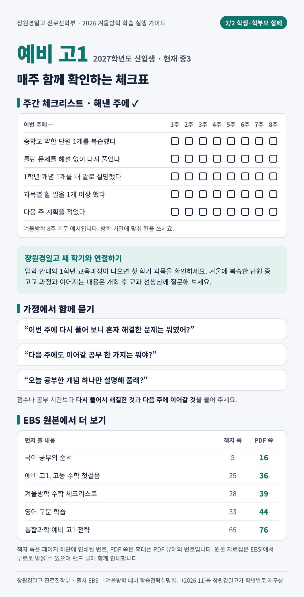
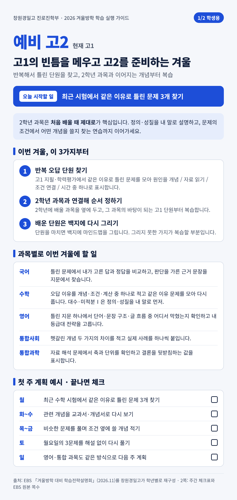
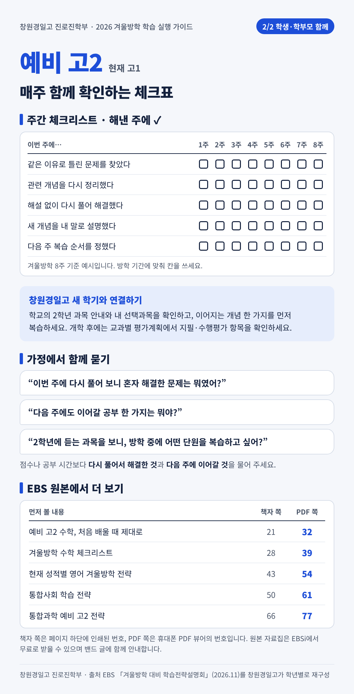
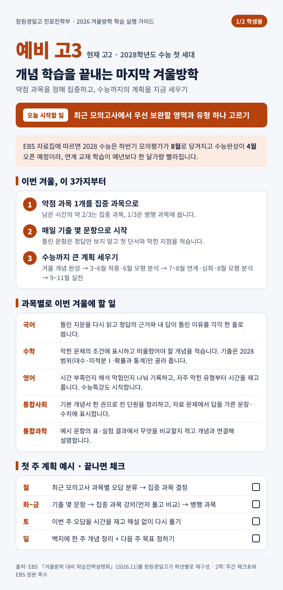
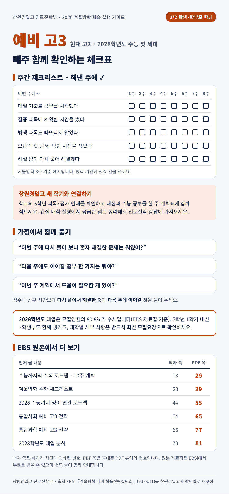

공통 · 2028 수능 체제와 EBS 자료 활용법
예비 고1·고2·고3 모두 읽어 주세요.

예비 고1
2027학년도 신입생 · 현재 중3


예비 고2
현재 고1


예비 고3
현재 고2 · 2028학년도 수능 첫 세대


전체 7쪽 PDF — 인쇄하거나 한 파일로 보관할 때 쓰세요.
PDF 내려받기
PDF 내려받기
EBS 원본 자료집(「겨울방학 대비 학습전략설명회」, 100쪽)은 EBSi에서 무료로 받을 수 있습니다. 가이드의 ‘PDF 쪽’은 원본 자료집 PDF의 쪽 번호입니다.